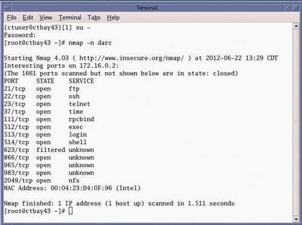
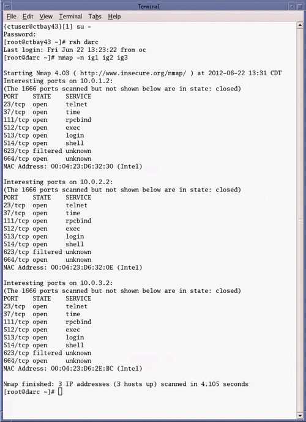

Assuming the Host Computer is able to boot the operating system and terminal window session is possible, the “nmap” command can be executed to check network interfaces. Note: Failure to communicate with the DARC computer will preclude any further testing of the IGs.
To test network interface between Host and the DARC Computers type: [root@hostname] nmap -n darc and press [Enter].
The DARC computer physically configured on the console in question should respond to nmap command (See example below).
Example “nmap” command output from a LightSpeed VCT GOC5 console:
Illustration 1: Host Computer “nmap -n darc” Command Output

To test network interface between DARC and the IG Computers type: [root@hostname] rsh darc and press [Enter].
Type: [root@darc] nmap -n ig1 ig2 ig3 and press [Enter].
The IG computers physically configured on the console in question should respond to nmap command (See example below).
Example “nmap” command output from a LightSpeed VCT GOC5 console equipped with three (3) IG computers:
Illustration 2: DARC Computer “nmap -n ig1 ig2 ig3” Command Output
